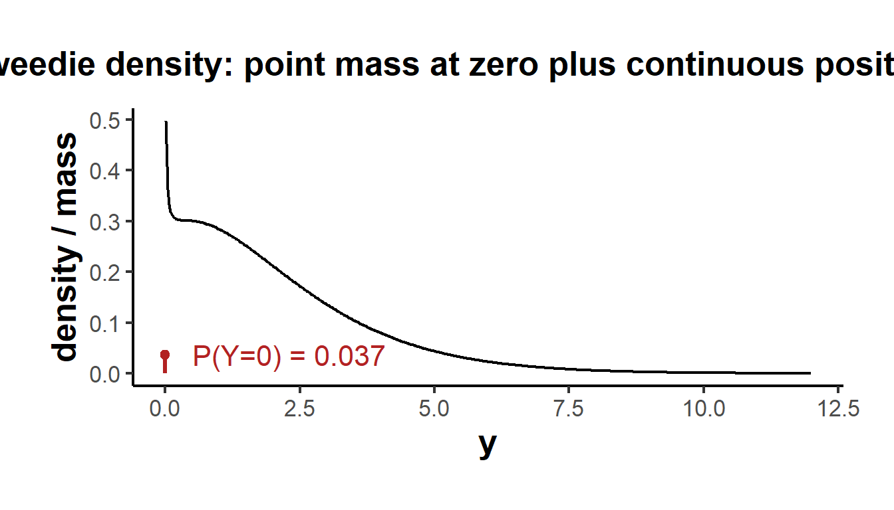
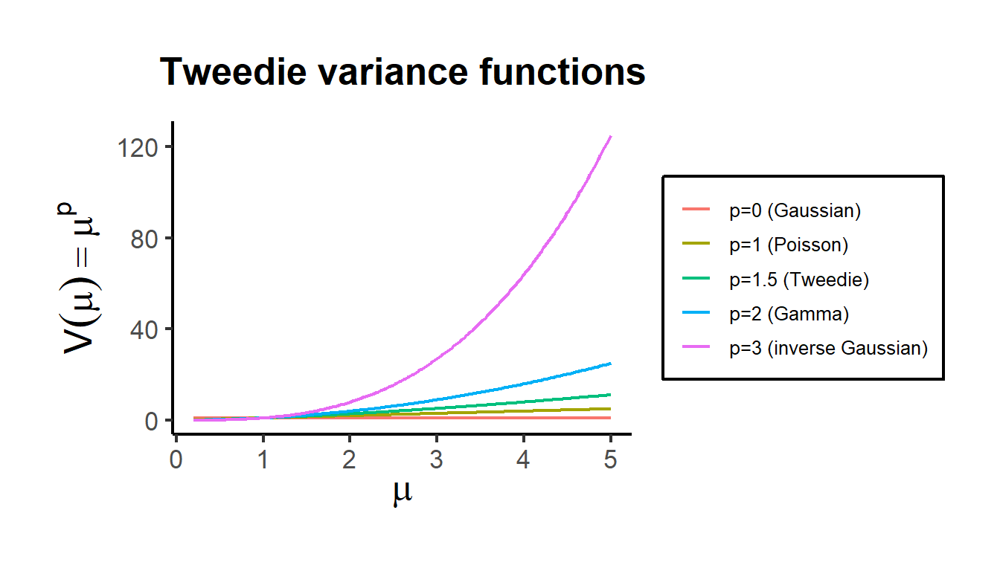
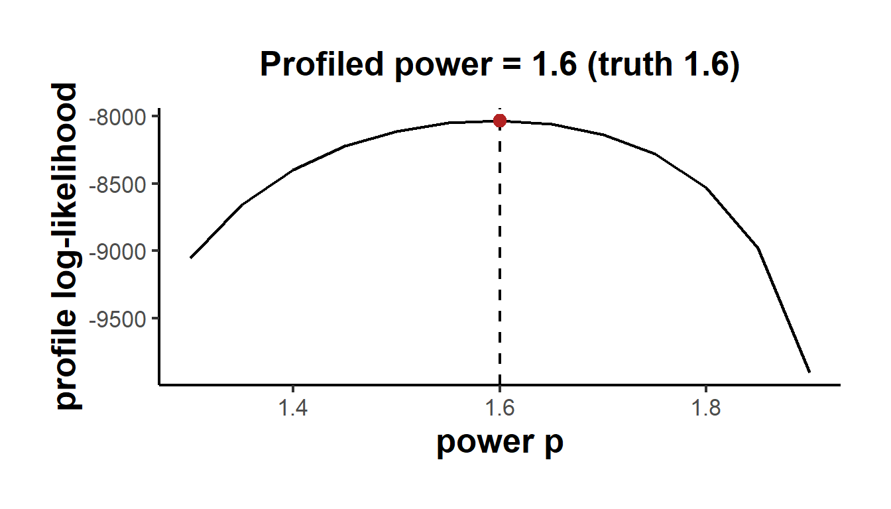

9 Tweedie Regression
Many outcomes that we want to model are a mixture of an exact zero and a continuous positive amount. The total dollar amount a policyholder claims from an insurer in a year is zero for most customers and a positive, right skewed number for the rest. The rainfall at a weather station on a given day is zero unless it rains. The biomass of a species caught in a trawl is zero in most hauls and positive in the rest. The total spend of a customer in a month is zero for the inactive and positive for the active. Each of these is a continuous variable with a spike of probability mass at zero, and neither the Gaussian, the Gamma, nor the Poisson distribution can describe it. The Gaussian ignores the skew and the floor at zero, the Gamma has no mass at zero because it is strictly positive, and the Poisson is for counts rather than amounts. The distribution that fits this shape, and the regression model built on it, is the Tweedie.
Tweedie regression is the member of the generalized linear model family whose variance is a power of the mean, \(\operatorname{Var}(Y) = \phi\,\mu^{p}\). For the power \(p\) between one and two the Tweedie distribution is a compound Poisson sum of Gamma increments, which is exactly the random variable described by “a random number of positive amounts,” and it places a genuine point mass at zero while remaining continuous on the positive line. It is the workhorse of actuarial pricing, where the quantity of interest is the pure premium, the expected claim cost per policy, and it appears throughout climatology, ecology, and any setting where a continuous response is zero a meaningful fraction of the time. This chapter develops the distribution and its regression model from the exponential dispersion family, derives the compound Poisson representation, explains how the intractable density is evaluated and how the three parameters are estimated, and then works through the canonical insurance application on real data, checking its conclusions against the published analysis of the same dataset, before turning to modern extensions.
9.1 The Tweedie Family Within Generalized Linear Models
A generalized linear model assumes the response follows an exponential dispersion model, a density of the form \[ f(y; \theta, \phi) = a(y, \phi)\,\exp\!\left\{\frac{y\theta - \kappa(\theta)}{\phi}\right\}, \] where \(\theta\) is the canonical parameter, \(\phi > 0\) is the dispersion, \(\kappa(\theta)\) is the cumulant function, and \(a(y,\phi)\) is a normalizing term that does not involve \(\theta\). The mean and variance follow from the cumulant function, \(\mu = \mathbb{E}[Y] = \kappa'(\theta)\) and \(\operatorname{Var}(Y) = \phi\,\kappa''(\theta) = \phi\, V(\mu)\), where \(V(\mu) = \kappa''(\theta(\mu))\) is the variance function. The variance function is what distinguishes one exponential dispersion model from another: it is constant for the Gaussian, equal to \(\mu\) for the Poisson, and equal to \(\mu^2\) for the Gamma.
Tweedie (1984) asked which exponential dispersion models have a variance function that is a pure power of the mean, \[ V(\mu) = \mu^{p}, \] and the answer, developed in full by Jørgensen (1987) and Jørgensen (1997), is the family that now bears his name. Every value of the power parameter (or index) \(p\) outside the open interval \((0,1)\) corresponds to a valid Tweedie exponential dispersion model, and the familiar distributions are special cases.
| Power \(p\) | Distribution | Support | Variance |
|---|---|---|---|
| \(p = 0\) | Gaussian | real line | constant |
| \(0 < p < 1\) | does not exist | — | — |
| \(p = 1\) | Poisson (scaled) | counts | \(\phi\mu\) |
| \(1 < p < 2\) | compound Poisson–Gamma | \(\{0\}\cup(0,\infty)\) | \(\phi\mu^p\) |
| \(p = 2\) | Gamma | \((0,\infty)\) | \(\phi\mu^2\) |
| \(2 < p < 3\) | positive stable | \((0,\infty)\) | \(\phi\mu^p\) |
| \(p = 3\) | inverse Gaussian | \((0,\infty)\) | \(\phi\mu^3\) |
| \(p > 2\) | positive stable | \((0,\infty)\) | \(\phi\mu^p\) |
The case that makes the Tweedie indispensable, and that has no analogue among the standard GLM distributions, is \(1 < p < 2\). There and only there the distribution is continuous on the positive reals yet assigns strictly positive probability to the single point zero. That is the law of a total of a random number of positive amounts, and it is what the rest of this chapter is mostly about. The reason no Tweedie model exists for \(0 < p < 1\) is not a gap in anyone’s derivation; Jørgensen (1997) shows that no exponential dispersion model can have such a variance function, so the interval is genuinely empty.
For \(p \neq 1, 2\) the canonical parameter and cumulant function have the closed forms \[ \theta = \frac{\mu^{\,1-p}}{1-p}, \qquad \kappa(\theta) = \frac{\mu^{\,2-p}}{2-p}, \] which one can verify reproduce \(\mu = \kappa'(\theta)\) and \(V(\mu) = \mu^p\). The mean is almost always linked to covariates through the logarithm, \(\log \mu_i = x_i^\top \beta\), because the responses are nonnegative and because the log link makes covariate effects multiplicative, which is exactly how actuaries and analysts want to read them: a coefficient becomes a relativity, a factor by which a rating cell multiplies the baseline.
9.2 The Compound Poisson–Gamma Model
The interpretation of the Tweedie for \(1 < p < 2\) is mechanical and exact. Let the number of events be Poisson and let each event contribute a Gamma amount, \[ N \sim \operatorname{Poisson}(\lambda), \qquad X_1, X_2, \dots \stackrel{\text{iid}}{\sim} \operatorname{Gamma}(\alpha, \gamma), \qquad Y = \sum_{i=1}^{N} X_i, \] with \(N\) independent of the \(X_i\) and the convention that an empty sum is zero. In the insurance reading, \(N\) is the number of claims a policy generates, each \(X_i\) is the size of a claim, and \(Y\) is the total cost. The total \(Y\) is then exactly a Tweedie variable, and the point mass at zero is the probability of no events at all, \[ \Pr(Y = 0) = \Pr(N = 0) = e^{-\lambda}, \] which for the insurance data below will be around ninety three percent. Conditioning on \(N\) and using the mean and variance of a Gamma gives \[ \mathbb{E}[Y] = \lambda\,\alpha\gamma = \mu, \qquad \operatorname{Var}(Y) = \lambda\,\alpha(\alpha+1)\gamma^2, \] and a short calculation shows that this variance is precisely \(\phi\mu^p\) once the compound Poisson parameters are matched to the Tweedie parameters through \[ \alpha = \frac{2-p}{p-1}, \qquad \lambda = \frac{\mu^{\,2-p}}{\phi\,(2-p)}, \qquad \gamma = \phi\,(p-1)\,\mu^{\,p-1}. \] These identities are worth pausing on because they make the power parameter interpretable. The Gamma shape \(\alpha = (2-p)/(p-1)\) is a decreasing function of \(p\): as \(p \to 1^{+}\) the shape diverges, the claim sizes become nearly constant, and the model approaches a pure Poisson count scaled by a fixed amount; as \(p \to 2^{-}\) the shape goes to zero, the claim sizes become extremely skewed, and the Poisson frequency \(\lambda\) collapses toward one, so the model approaches a Gamma on a single positive amount. A value such as \(p = 1.5\) sits in the middle, with moderate claim frequency and moderate skew. The power parameter is therefore not a nuisance; it encodes the relative contributions of frequency and severity to the variance of the total, and estimating it is part of fitting the model.
9.3 The Density and Why It Must Be Approximated
The feature that makes the Tweedie powerful for \(1 < p < 2\) also makes it computationally awkward: its density has no closed form. Writing the density as a mixture over the unobserved event count,
\[
f(y; \mu, \phi, p) = \underbrace{e^{-\lambda}}_{\Pr(N=0)}\,\delta_{0}(y) \;+\; \sum_{n=1}^{\infty} \underbrace{\frac{e^{-\lambda}\lambda^{n}}{n!}}_{\Pr(N=n)}\, \underbrace{f_{\Gamma}(y; n\alpha, \gamma)}_{\text{sum of } n \text{ Gamma}},
\]
shows the problem. For \(y = 0\) the density is just the point mass \(e^{-\lambda}\), which is trivial, but for \(y > 0\) it is an infinite sum of Gamma densities weighted by Poisson probabilities, with no closed form. Two numerical strategies make it usable. Dunn and Smyth (2005) evaluate the infinite series directly, truncating it where the terms become negligible and choosing the truncation adaptively so that the result is accurate across the parameter space. Dunn and Smyth (2008) instead compute the density by Fourier inversion of the characteristic function, which is more stable in the heavy tail where the series converges slowly. Both are implemented in the tweedie package, and the analyst rarely calls them directly; they sit underneath the likelihood evaluation that estimation requires. It is worth knowing they are there, however, because for very large responses both methods can fail numerically, a limitation that surfaces in the heavy tailed insurance data later in the chapter.
The point mass and the continuous part are visible directly from the density function. Figure 9.1 evaluates the Tweedie density at a mean of two, dispersion one, and power \(1.6\), separating the spike of probability at zero from the smooth continuous density over the positive values.
library(tweedie)
mu <- 2; phi <- 1; p <- 1.6
mass0 <- dtweedie(0, mu = mu, phi = phi, power = p) # P(Y = 0)
ygrid <- seq(0.01, 12, length.out = 400)
dens <- dtweedie(ygrid, mu = mu, phi = phi, power = p)
library(ggplot2)
ggplot(data.frame(y = ygrid, d = dens), aes(y, d)) +
geom_line(linewidth = 0.8) +
annotate("segment", x = 0, xend = 0, y = 0, yend = mass0,
linewidth = 1.2, colour = "firebrick") +
annotate("point", x = 0, y = mass0, colour = "firebrick", size = 2) +
annotate("text", x = 0.5, y = mass0, hjust = 0,
label = paste0("P(Y=0) = ", round(mass0, 3)), colour = "firebrick") +
labs(x = "y", y = "density / mass",
title = "Tweedie density: point mass at zero plus continuous positive part") +
causalverse::ama_theme()
Figure 9.1: The Tweedie density for a mean of two, dispersion one, and power 1.6. A point mass sits at zero (here about four percent of the probability) and a continuous, right skewed density covers the positive values. No standard GLM distribution has this shape.
The variance function itself is the cleanest way to see where the Tweedie sits among its neighbors. Because \(\operatorname{Var}(Y) = \phi\,\mu^{p}\), the power \(p\) controls how fast the variance grows with the mean, interpolating continuously between the constant variance of the Gaussian, the linear variance of the Poisson, and the quadratic variance of the Gamma. Figure 9.2 draws those curves together.
mu_seq <- seq(0.2, 5, length.out = 200)
vf <- do.call(rbind, lapply(
c(`p=0 (Gaussian)` = 0, `p=1 (Poisson)` = 1, `p=1.5 (Tweedie)` = 1.5,
`p=2 (Gamma)` = 2, `p=3 (inverse Gaussian)` = 3),
function(p) data.frame(mu = mu_seq, V = mu_seq^p)
))
vf$power <- rep(c("p=0 (Gaussian)", "p=1 (Poisson)", "p=1.5 (Tweedie)",
"p=2 (Gamma)", "p=3 (inverse Gaussian)"), each = length(mu_seq))
ggplot(vf, aes(mu, V, colour = power)) +
geom_line(linewidth = 0.8) +
labs(x = expression(mu), y = expression(V(mu) == mu^p),
colour = NULL, title = "Tweedie variance functions") +
causalverse::ama_theme()
Figure 9.2: The Tweedie variance function for several powers of the mean. The power parameter interpolates continuously between the Gaussian (constant variance), the Poisson (linear), the Gamma (quadratic), and the inverse Gaussian (cubic).
9.4 Estimation: Mean, Dispersion, and Power
Fitting a Tweedie regression means estimating three things: the regression coefficients \(\beta\) in \(\log\mu_i = x_i^\top\beta\), the dispersion \(\phi\), and the power \(p\). They are estimated in a nested way that exploits a convenient fact: for any fixed \(p\), the coefficients are estimated by ordinary GLM machinery, and only the power requires anything special.
9.4.1 The Mean Model for Fixed Power
Hold \(p\) fixed. The Tweedie is then an ordinary exponential dispersion model with variance function \(V(\mu) = \mu^p\), and the coefficients are estimated by iteratively reweighted least squares, the same Fisher scoring algorithm that fits every GLM. The score equations for \(\beta\) are
\[
\sum_{i=1}^{n} \frac{y_i - \mu_i}{\phi\, V(\mu_i)}\,\frac{\partial \mu_i}{\partial \eta_i}\, x_i = 0, \qquad \eta_i = x_i^\top\beta,
\]
which depend on the distribution only through the variance function \(V(\mu_i) = \mu_i^{p}\) and not through the intractable density. Each IRLS iteration regresses a working response on the covariates with working weights
\[
w_i = \frac{1}{V(\mu_i)}\left(\frac{\partial \mu_i}{\partial \eta_i}\right)^{2} = \frac{\mu_i^{2}}{\mu_i^{p}} = \mu_i^{2-p}
\]
under the log link, and iterates to convergence. Because the score equations are exactly the quasi-likelihood estimating equations, the coefficient estimates are consistent as long as the mean model and the variance function are correct, even if the full Tweedie distribution is not literally true, which is one reason the model is so robust in practice. The deviance that IRLS minimizes is the sum of unit deviances
\[
d(y, \mu) = 2\left[\frac{y\,(y^{1-p} - \mu^{1-p})}{1-p} - \frac{y^{2-p} - \mu^{2-p}}{2-p}\right], \qquad p \neq 1, 2,
\]
with the obvious limits recovering the Poisson and Gamma deviances at the endpoints. In R the variance function and link are supplied by the tweedie family from the statmod package, after which glm fits the model exactly as it would a Poisson or Gamma.
9.4.2 Estimating the Dispersion
Given the fitted means, the dispersion \(\phi\) is estimated either by the mean Pearson statistic, \(\hat\phi = \frac{1}{n-k}\sum_i (y_i - \hat\mu_i)^2 / \hat\mu_i^{p}\), or by maximum likelihood, which requires the density and is therefore a little more work but is what the likelihood based comparisons below rely on. The Pearson estimate is the GLM default and is what summary.glm reports as the dispersion.
9.4.3 Estimating the Power by Profile Likelihood
The power \(p\) is the one parameter that the GLM cannot estimate on its own, because it indexes which distribution we are fitting rather than a parameter within a fixed distribution. It is estimated by profile likelihood: for each candidate \(p\) on a grid, fit the GLM, estimate the dispersion, evaluate the full Tweedie log-likelihood at the fitted values using the density routines, and choose the \(p\) that maximizes it. This is the one step that genuinely needs the intractable density, which is why the whole apparatus of Dunn and Smyth (2005) and Dunn and Smyth (2008) exists. The profile is transparent enough to write directly: loop over \(p\), fit, and sum the log density. The simulation in the next section does exactly that and shows it recovers a known power.
9.5 A Simulation That Recovers the Truth
The cleanest way to confirm that the estimation works is to generate data from a known Tweedie model and recover its parameters. We draw a compound Poisson–Gamma response with a true power of \(1.6\), a log linear mean depending on one covariate, and a known dispersion, then profile the power by hand and fit the coefficients at the estimate.
library(statmod)
library(tweedie)
set.seed(2026)
n <- 3000
x <- runif(n, -1, 1)
mu <- exp(1.5 + 0.8 * x) # true log-linear mean
y <- rtweedie(n, mu = mu, phi = 2, power = 1.6) # true phi = 2, p = 1.6
# Profile log-likelihood for the power: for each p, fit the GLM and sum the
# Tweedie log-density at the fitted mean and Pearson dispersion.
profile_power <- function(y, x, p_grid) {
vapply(p_grid, function(p) {
fit <- glm(y ~ x, family = tweedie(var.power = p, link.power = 0))
sum(log(dtweedie(y, mu = fitted(fit),
phi = summary(fit)$dispersion, power = p)))
}, numeric(1))
}
p_grid <- seq(1.3, 1.9, by = 0.05)
logL <- profile_power(y, x, p_grid)
p_hat <- p_grid[which.max(logL)]
ggplot(data.frame(p = p_grid, logL = logL), aes(p, logL)) +
geom_line(linewidth = 0.8) +
geom_vline(xintercept = 1.6, linetype = "dashed") +
geom_point(data = data.frame(p = p_hat, logL = max(logL)),
colour = "firebrick", size = 3) +
labs(x = "power p", y = "profile log-likelihood",
title = paste0("Profiled power = ", p_hat, " (truth 1.6)")) +
causalverse::ama_theme()
Figure 9.3: Profile log-likelihood for the Tweedie power parameter on simulated data whose true power is 1.6 (dashed line). The profile peaks at the truth, confirming that the power is identified and recovered.
fit_sim <- glm(y ~ x, family = tweedie(var.power = p_hat, link.power = 0))
knitr::kable(
data.frame(
Parameter = c("Intercept", "Slope (x)", "Dispersion phi", "Power p"),
Truth = c(1.5, 0.8, 2.0, 1.6),
Estimate = round(c(coef(fit_sim), summary(fit_sim)$dispersion, p_hat), 3)
),
caption = "Tweedie regression recovers the data-generating parameters on simulated compound Poisson-Gamma data.",
align = c("l", "r", "r")
)| Parameter | Truth | Estimate |
|---|---|---|
| Intercept | 1.5 | 1.506 |
| Slope (x) | 0.8 | 0.839 |
| Dispersion phi | 2.0 | 1.967 |
| Power p | 1.6 | 1.600 |
The profile in Figure 9.3 peaks at the true power, and the coefficients and dispersion in Table 9.1 land on their data generating values, confirming that the three part estimation scheme works as intended.
9.7 Beyond the GLM: Smooth, Regularized, and Boosted Tweedie Models
The Tweedie response is not tied to the linear predictor of a GLM; it is a likelihood that can sit on top of any modern regression engine, and the same actuarial and scientific problems that motivate it have driven its incorporation into flexible models.
A Tweedie generalized additive model replaces linear terms with smooth functions, which is valuable when a rating factor such as vehicle value or driver age has a nonlinear effect on cost. The mgcv package fits these and, unlike the GLM workflow above, estimates the power parameter jointly with the smooths by restricted maximum likelihood, so the analyst does not profile it by hand.
library(mgcv)
gam_fit <- gam(pp ~ s(veh_value) + veh_body + agecat + gender,
weights = exposure, family = tw(), data = d, method = "REML")
cat("mgcv estimated Tweedie power p =",
round(gam_fit$family$getTheta(TRUE), 3), "\n")
#> mgcv estimated Tweedie power p = 1.606The REML estimate of the power, near \(1.6\), sits a little below the GLM profile estimate, a reminder that the power is estimated jointly with the rest of the model and shifts with the mean specification. For high-dimensional rating problems with many correlated factors, Qian et al. (2016) develop a grouped elastic net for the Tweedie compound Poisson model, implemented in the HDtweedie package, which selects and shrinks coefficients while respecting the grouping of a categorical factor’s dummy variables. For the flexible, interaction-rich models that dominate contemporary insurance practice, the Tweedie deviance is available as a loss function in gradient boosting libraries, so a boosted-tree pure premium model is a direct nonparametric extension of the GLM. Both are shown for reference rather than run, since they require additional packages and tuning.
# High-dimensional grouped elastic net (Qian, Yang & Zou 2016).
library(HDtweedie)
cv <- cv.HDtweedie(x = X, y = y, group = grp, p = 1.5)
# Gradient-boosted trees with the Tweedie deviance loss.
library(xgboost)
bst <- xgboost(data = X, label = y, nrounds = 200,
objective = "reg:tweedie",
tweedie_variance_power = 1.5)A fully Bayesian and mixed-model treatment is available as well: Zhang (2013) develops likelihood-based and Bayesian estimation for Tweedie compound Poisson linear mixed models in the cplm package, which adds random effects to the structure above, the natural tool when policies are grouped within regions, agents, or years.
9.8 Practical Guidance and Pitfalls
A few points govern whether a Tweedie analysis goes smoothly.
The power parameter should be estimated, not assumed, but it need not be estimated precisely. The fit and the coefficients are fairly insensitive to small changes in \(p\) across the plausible range, so a profile on a coarse grid, or the REML estimate from mgcv, is usually enough. Fixing \(p\) at a round value such as \(1.5\) for a first pass is a reasonable habit, but the final model should report a profiled or jointly estimated power.
The exposure belongs in the model as a weight on the pure premium response, not as a covariate. Treating exposure as a regressor confounds the amount of time at risk with the rating factors and produces uninterpretable coefficients. The construction used above, response equal to cost over exposure with weights equal to exposure, is the standard one and makes the fitted mean a rate.
The numerical evaluation of the density can fail in the heavy tail. For very large responses, both the series and the inversion methods can return non-finite values, which is why the power profile above was restricted to a grid where the likelihood was computable and why the maximum sat at the edge of that grid rather than at a clean interior peak. When this happens, profiling on a subsample, trimming or capping a handful of extreme observations for the power estimation step only, or relying on the mgcv REML estimate are all reasonable responses; none of them affects the coefficient estimates, which never touch the density.
Finally, the Tweedie is a model of a mean, and like every GLM it identifies an association that is causal only under the usual assumptions. Its value is that it gets the distributional shape of a zero-inflated continuous response right, which makes its standard errors and predictions trustworthy where a Gaussian or log-normal model would not be, but it does not by itself license a causal reading of the rating factors. For pricing that is exactly what is wanted, since the goal is an accurate conditional mean rather than a counterfactual; for an application where a factor is meant to be a treatment, the identification has to come from the design, as everywhere else in this book.